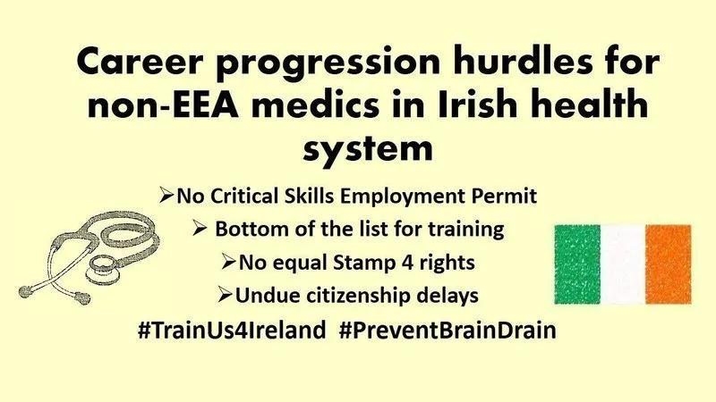
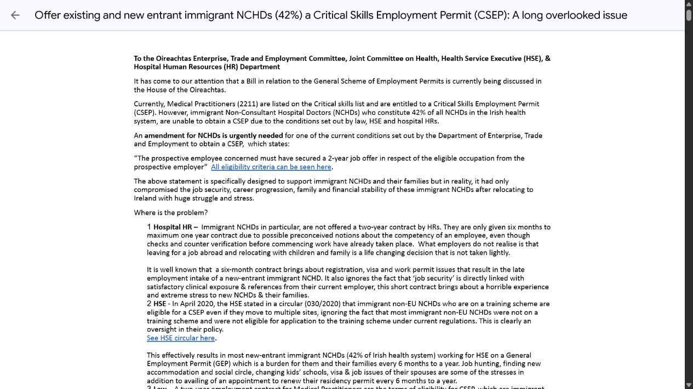
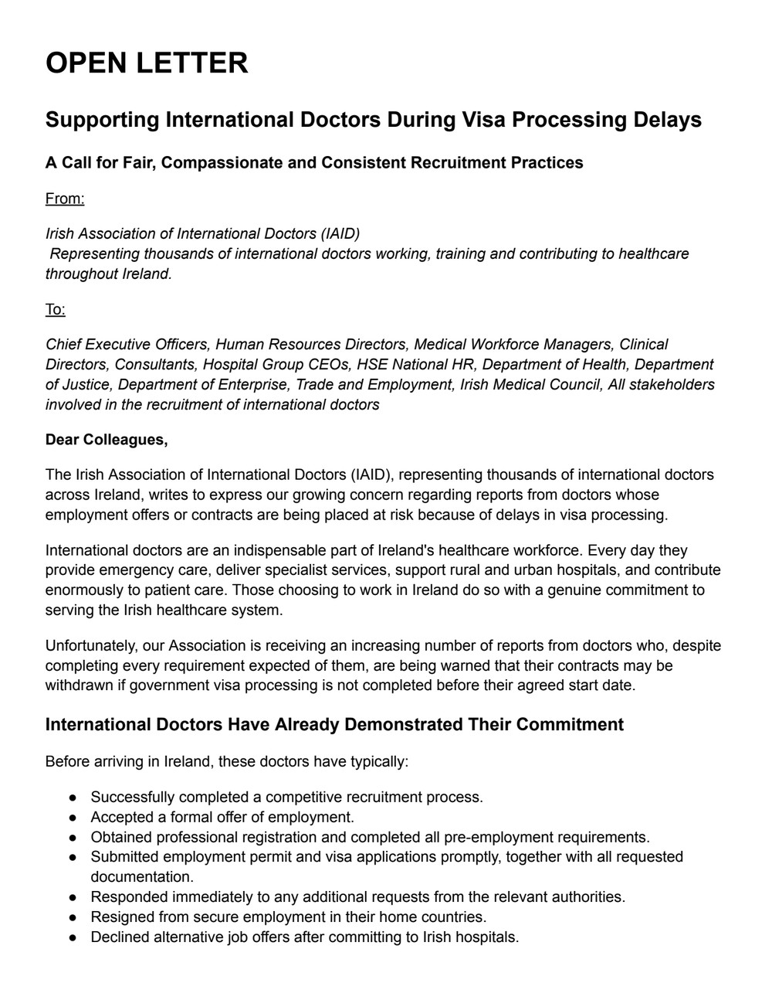
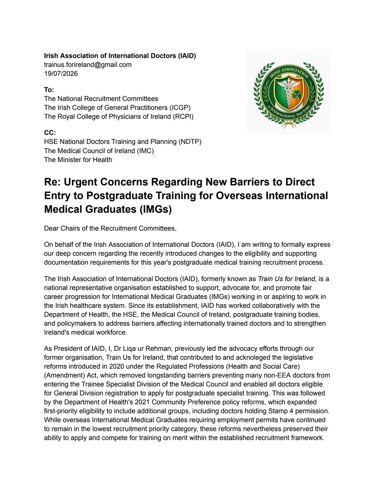

Seven years of national advocacy and reform
The Irish Association of International Doctors (IAID) emerges from a seven-year national struggle and reform movement initiated under the banner “Train Us For Ireland 🇮🇪.”
This movement was born from the collective challenges faced by International Medical Graduates (IMGs) in Ireland—including barriers to training, unequal career progression, immigration difficulties, and lack of representation.
For seven years, sustained advocacy and engagement have worked to highlight these systemic issues and push for meaningful reform within the Irish healthcare system.
- 01Petitions
- 02Open letters
- 03Public statements
- 04Stakeholder engagement
Public campaigns that carried doctors’ voices
Petitions, open letters, public statements, and stakeholder engagement turned shared experience into clear calls for change. These campaigns record the movement’s principal public asks; the achievements below record the reforms that followed.

View campaign 01 Training & retention · 2020Train and Retain International Doctors
The movement called for equal access to specialist training, transparent career progression, recognition of an alternate pathway, and action on the employment and immigration barriers driving international doctors away from Ireland.
680 petition supporters View campaign
02
Immigration equality · 2022
View campaign
02
Immigration equality · 2022
Faster Stamp 4 Access and Equality for Doctors
This successful campaign sought earlier Stamp 4 access, equal treatment of Stamp 4 categories in training allocation, and fairer professional support for international doctors outside formal training schemes.
Successful · 2,574 signatures
Read open letter 03 Employment security · 2021Critical Skills permits for immigrant NCHDs
An open-letter campaign challenged contract structures that kept many non-training NCHDs from accessing Critical Skills Employment Permits, long-term job security, and the associated family and residency benefits.
Open letter · 600+ signaturesFast-track citizenship for frontline workers
During the pandemic, the movement petitioned for legislation recognising frontline workers’ service and wrote to TDs and senators seeking priority processing for long-delayed citizenship applications.
National petition & Oireachtas outreach View campaign
05
Family reunification · 2024
View campaign
05
Family reunification · 2024
Faster Family Visa Processing
IAID and partner representatives called for an effective communication channel, an accessible complaints process, and an audit of prolonged and unequal family-visa processing times affecting doctors and other skilled professionals.
Public petition & stakeholder engagement Read coverage
06
Fair work · 2023
Read coverage
06
Fair work · 2023
Locum reform and fair pay
Train Us For Ireland brought low and inconsistent locum rates, restrictive terms, and the impact of rising living costs into public discussion, calling for revised rates and a fairer national approach.
Public advocacy & media engagement
Read open letter 07 Recruitment fairness · 2026Protecting doctors during visa processing delays
IAID’s open letter asks employers and national stakeholders not to withdraw job offers where a doctor’s start date is affected solely by government visa processing. It calls for consistent support, regular communication, earlier recruitment, and practical liaison while applications remain pending.
Open letter · 84 signatures
Read open letter 08 Training access · July 2026Fair access to postgraduate training applications
IAID raised concerns that requiring an existing Irish immigration permission at the application stage can exclude otherwise eligible overseas IMGs. The letter seeks an immediate review, a provisional application pathway, transparent recruitment data, and meaningful consultation.
Open letter to ICGP and RCPIMajor achievements of the movement
Through advocacy, dialogue, and national engagement, the movement contributed to key developments including:
Specialist training eligibility
In November 2020, a legal barrier was removed for non-EEA-qualified doctors whose internships were not previously deemed equivalent to an Irish internship. Eligible doctors could pursue Trainee Specialist Division registration and compete for postgraduate training, subject to the usual Medical Council and recruitment requirements.
View the official policy recordStamp 4 training access
In 2021, postgraduate training policy was widened so Stamp 4 holders joined Irish, EU and UK candidates in the first allocation group for available specialist training places.
Read the Department of Health statementAlternate Training Pathway
The movement records IMC recognition of the Alternate Training Pathway (CSD) as an important step towards recognising doctors’ structured training and experience through an additional route.
Two-year multisite permit
Introduced in December 2021 for non-EEA doctors in the public health system, the two-year multisite General Employment Permit enabled one permit to cover work across multiple hospital sites and reduced repeated administration.
View the official immigration announcementStamp 4 after 21 months
From September 2022, non-EEA doctors with 21 months on a General Employment Permit could request a Stamp 4 support letter. Their spouses or partners could also receive permission allowing them to work.
Read the employment-permit noticeLocum pay reform
The campaign helped establish locum pay and conditions as a national workforce issue, supporting attention to revised hourly rates and a fairer, more consistent approach for doctors across Ireland.
Read the locum-reform coverageIssues brought into national focus
Most recently, the movement has raised national awareness regarding:
Passport and family visa delays
IAID has raised awareness of passport, visa, and family-reunification delays that place strain on doctors and their families, disrupt long-term planning, and can affect workforce retention.
IMC registration delays
IAID supports clearer guidance, realistic timelines, and constructive attention to administrative delays affecting doctors preparing to enter or progress within the Irish healthcare workforce.
Bullying and racial discrimination
IAID promotes dignity, inclusion, and fair treatment, while raising awareness of bullying and racial discrimination affecting immigrant doctors working across Ireland.
Healthcare workforce retention
IAID contributes international doctors’ perspectives to discussions on retention, career progression, family stability, workplace culture, and the conditions that help skilled doctors continue serving patients in Ireland.
These issues have been highlighted through professional advocacy, engagement with stakeholders, and contributions in Irish media, with a firm commitment to dignity, fairness, and respect for all doctors working in Ireland.